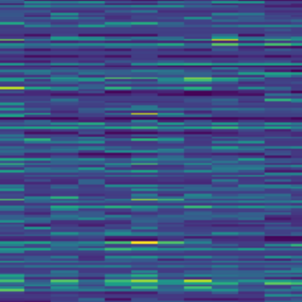

Christos Plachouras
about
I started music classes at the age of 3 at the Philippos Nakas Conservatory, where I obtained degrees in classical piano, keyboard, and electric organ. I had a deep fascination with mathematics, programming, and computer hardware, and, growing up, I started exploring their intersection with music.
During my undergraduate years, I was fortunate to explore my passions further, and specialize and contribute to the scientific and artistic fields that most interest me. I studied in Abu Dhabi, Paris and New York, in cool places such as NYU's Music, Science, and Engineering Departments, IRCAM, and École Cortot.
I am currently a Sound and Music Computing Master's student at the Music Technology Group (MTG) at Universitat Pompeu Fabra and a Data Scientist (R&D) at Utopia Music. I am most engaged in topics in audio processing and music information retrieval, such as representation learning, audio identification, audio-based music structure analysis, audio-based searching and visualization in large music libraries, and programmatic sound design. At the same time, I am constantly involved in projects with data (not just audio signals, but also images, text, and others). I'm also keeping my interest in composing music, primarly through electronic and contemporary classical compositions that have been performed in Abu Dhabi, New York, and Athens, while doing piano performances from time to time.
research
active things

Evaluation of discriminative music embeddings
Evaluating the robustness and the music information contained in embeddings from popular music deep learning models.
Audio Fingerprinting using self-supervised learning
Learning optimal fingerprints for music identification and broadcast monitoring.
Music rearrangement
Methods for rearranging a music recording so that it matches a new duration.

Audio-based hierarchical structure analysis and similarity |
Methods for computing a hierarchical representation of music structure from recordings and defining a similarity metric between them. Utilized for music similarity metrics and cover song identification.

Computational approaches for understanding and preserving music collections from the Middle East - North Africa (MENA) and East Africa regions |
Digital music library audio-feature-based organization, indexing, visualization, and searchability.
other things
Computational approaches to Ottoman Turkish Makam Music (OTMM) understanding |
A range of experiments in OTMM melody analysis and makam identification and characterization.
Early musical memories |
Understanding the moods, emotions, and vividness people associate with their earliest musical memories.

Music generation using Charles Koechlin's "Les chants de Nectaire"
Structure-centric automatic music generation from rich symbolic music data.
publications and presentations

Utilizing Hierarchical Structure for Audio-Based Music Similarity |
Plachouras, C.
Late-Breaking Demo, International Society of Music Information Retrieval (ISMIR) Conference 2021 (virtual)

Mapping Timbre Space in Regional Music Collections using HPSS Decomposition |
Ganguli, K.K., Plachouras, C., Sentürk, S., Eisenberg, A., & Guedes, C.
Proceedings of the 2nd International Conference on Timbre, Timbre 2020, Thessaloniki, Greece (virtual)

Computational Audio Analysis for Cultural Heritage Preservation |
Plachouras, C.Feature on the webpage of the Council on Undergraduate Research (CUR)

Mapping the Sounds of the Swahili coast and the Arab Mashriq |
Trochidis, K., Russell, B., Eisenberg, A. J., Ganguli, K., Gonez, O., Plachouras, C., Guedes, C., & Danielson, V.TROMPA presentation at the 6th Digital Libraries for Musicology event of ISMIR 2019, The Hague, Netherlands
music
compositions
(selected)


performances
(selected)

Rachmaninoff - Piano Concerto No. 2, I. Moderato |
Christos Plachouras, Iaonnis Potamousis, Live at NYUAD Blue Hall, December 2018

Bach - Partita No. 2 in C minor, I. Simfonia |
Christos Plachouras, Live at NYUAD Blue Hall, May 2018

Messiaen - Vingt Regards - II. Regard de l'étoile |
Christos Plachouras, Studio Odeon, Athens, October 2016
writing
Reflections |
A collection of weekly reflections on topics such as wellbeing, happiness, and meditation.

Perspectives on Music Performance Anxiety |
Why your stage fright uncovers deeper issues in music education and culture